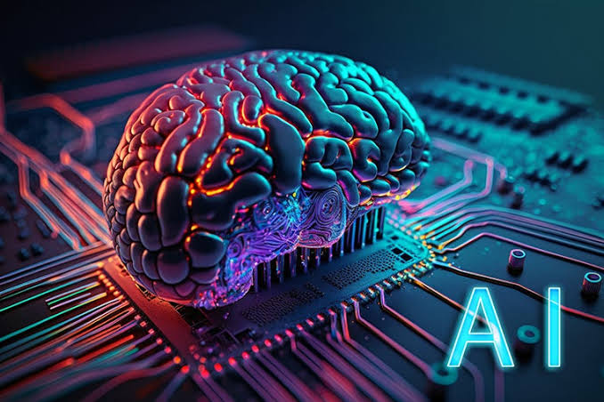
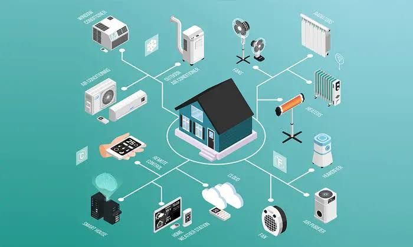
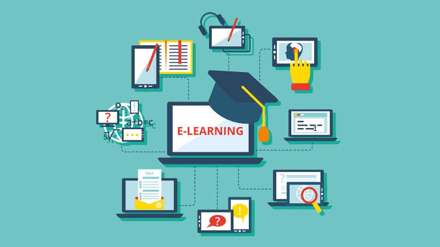

Internet of Things (IoT)
Today technology is getting more advanced than before with emerging technologies such as artificial intelligence and using of smartphones with touchscreen it continues to make technology is more faster and efficiently.
Key Trends and Technologies

Artificial Intelligence (AI)
is a machine-based system and the branch of computer science focused on creating systems capable of performing some tasks that typically require human intelligence, such as understanding language, recognizing patterns, and making decisions. AI influences various fields, including education, social sciences, and information technology, and plays a significant role in promoting gender equality and advancing knowledge in natural sciences.
Cloud Computing
is the delivery of computing services such as storage, databases, networking, software and intelligence over the internet (“the cloud”) to offer faster innovation, flexible resources, and economies of scale. You typically pay only for cloud services you use, helping you lower your operating costs, run your infrastructure more efficiently, and scale as your business needs change.

Internet of Things (IoT)
refers to a network of physical devices, vehicles, appliances, and other physical objects that are embedded with sensors, software, and network connectivity, allowing them to collect and share data.
Social Media
a form of mass media communications on the Internet (such as on websites for social networking and microblogging) through which users share information, ideas, personal messages, and other content (such as videos).
Mobile Technology
Portable communication devices and cellular infrastructure—such as smartphones, tablets, and mobile apps—enabling connectivity and computing anytime, anywhere.

E-Learning
is a type of online distance learning that uses the Internet and new digital technologies to enhance learning processes. This type of teaching lets learners train remotely at whatever time is convenient for them.